Today’s Adventure: Global and Local Measures of Spatial Autocorrelation! We’ll learn how to compute Global Spatial Autocorrelation (GSA) and Local Indicator of Spatial Association (LISA) statistics, as well as detect hot spot and/or cold spots with the spdep package 💡
Imagine you’re a planner working for the local government, and you’re tasked with planning the development across the province in line with the spatial policies set. Of course, the ideal would to have an equal distribution of development - but how would we find that?
With the appropriate spatial statistical methods, we can determine if the distrubution is equal, or if there are signs of spatial clustering. In the context of this exercise’s data - we aim to select a development indicator (e.g. GDP per capita) and examine its spatial pattern within the boundaries of the Hunan Province.
The R packages we’ll be using today are:
packages = c('sf', 'spdep', 'tmap', 'tidyverse')
for (p in packages){
if(!require(p, character.only = T)){
install.packages(p)
}
library(p,character.only = T)
}
The datasets used for this exercise are:
Hunan_2012 (aspatial data): a .csv which stores Hunan’s local development indicators in 2012Hunan (geospatial data): an ESRI shapefile which stores Hunan’s province administrative boundary layer at the county levelLet’s import our aspatial and geospatial data per usual:
#output: simple features object
hunan <- st_read(dsn = "data/geospatial",
layer = "Hunan")
Reading layer `Hunan' from data source
`C:\IS415\IS415_msty\_posts\2021-09-27-hands-on-exercise-7\data\geospatial'
using driver `ESRI Shapefile'
Simple feature collection with 88 features and 7 fields
Geometry type: POLYGON
Dimension: XY
Bounding box: xmin: 108.7831 ymin: 24.6342 xmax: 114.2544 ymax: 30.12812
Geodetic CRS: WGS 84#output: R dataframe class
hunan2012 <- read_csv("data/aspatial/Hunan_2012.csv")
Once again, recall:
Let’s perform a relational join to update the attribute data of hunan’s SpatialPolygonsDataFrame with the attribute fields of our hunan2012 dataframe. We’ll do this with left_join():
| NAME_2 | ID_3 | NAME_3 | ENGTYPE_3 | Shape_Leng | Shape_Area | County | City | avg_wage | deposite | FAI | Gov_Rev | Gov_Exp | GDP | GDPPC | GIO | Loan | NIPCR | Bed | Emp | EmpR | EmpRT | Pri_Stu | Sec_Stu | Household | Household_R | NOIP | Pop_R | RSCG | Pop_T | Agri | Service | Disp_Inc | RORP | ROREmp | geometry |
|---|---|---|---|---|---|---|---|---|---|---|---|---|---|---|---|---|---|---|---|---|---|---|---|---|---|---|---|---|---|---|---|---|---|---|---|
| Changde | 21098 | Anxiang | County | 1.869074 | 0.1005619 | Anxiang | Changde | 31935 | 5517.2 | 3541.0 | 243.64 | 1779.5 | 12482.0 | 23667 | 5108.9 | 2806.9 | 7693.7 | 1931 | 336.39 | 270.5 | 205.9 | 19.584 | 17.819 | 148.1 | 135.4 | 53 | 346.0 | 3957.9 | 528.3 | 4524.41 | 14100 | 16610 | 0.6549309 | 0.8041262 | POLYGON ((112.0625 29.75523… |
| Changde | 21100 | Hanshou | County | 2.360691 | 0.1997875 | Hanshou | Changde | 32265 | 7979.0 | 8665.0 | 386.13 | 2062.4 | 15788.0 | 20981 | 13491.0 | 4550.0 | 8269.9 | 2560 | 456.78 | 388.8 | 246.7 | 42.097 | 33.029 | 240.2 | 208.7 | 95 | 553.2 | 4460.5 | 804.6 | 6545.35 | 17727 | 18925 | 0.6875466 | 0.8511756 | POLYGON ((112.2288 29.11684… |
| Changde | 21101 | Jinshi | County City | 1.425620 | 0.0530241 | Jinshi | Changde | 28692 | 4581.7 | 4777.0 | 373.31 | 1148.4 | 8706.9 | 34592 | 10935.0 | 2242.0 | 8169.9 | 848 | 122.78 | 82.1 | 61.7 | 8.723 | 7.592 | 81.9 | 43.7 | 77 | 92.4 | 3683.0 | 251.8 | 2562.46 | 7525 | 19498 | 0.3669579 | 0.6686757 | POLYGON ((111.8927 29.6013,… |
| Changde | 21102 | Li | County | 3.474324 | 0.1890812 | Li | Changde | 32541 | 13487.0 | 16066.0 | 709.61 | 2459.5 | 20322.0 | 24473 | 18402.0 | 6748.0 | 8377.0 | 2038 | 513.44 | 426.8 | 227.1 | 38.975 | 33.938 | 268.5 | 256.0 | 96 | 539.7 | 7110.2 | 832.5 | 7562.34 | 53160 | 18985 | 0.6482883 | 0.8312558 | POLYGON ((111.3731 29.94649… |
| Changde | 21103 | Linli | County | 2.289506 | 0.1145036 | Linli | Changde | 32667 | 564.1 | 7781.2 | 336.86 | 1538.7 | 10355.0 | 25554 | 8214.0 | 358.0 | 8143.1 | 1440 | 307.36 | 272.2 | 100.8 | 23.286 | 18.943 | 129.1 | 157.2 | 99 | 246.6 | 3604.9 | 409.3 | 3583.91 | 7031 | 18604 | 0.6024921 | 0.8856065 | POLYGON ((111.6324 29.76288… |
Let’s visualise our geospatial data - our goal is to show the distribution of GDPPC 2012:
equal <- tm_shape(hunan) +
tm_fill("GDPPC",
n = 5,
style = "equal") +
tm_borders(alpha = 0.5) +
tm_layout(main.title = "Equal interval classification")
quantile <- tm_shape(hunan) +
tm_fill("GDPPC",
n = 5,
style = "quantile") +
tm_borders(alpha = 0.5) +
tm_layout(main.title = "Equal quantile classification")
tmap_arrange(equal,
quantile,
asp=1,
ncol=2)
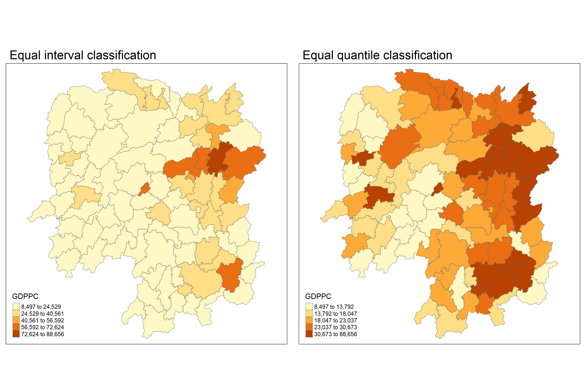
Let’s learn how to compute global spatial autocorrelation statistics, as well as how to perform spatial complete randomness test for global spatial autocorrelation. Callback to our previous exercise and its recommended reading on contiguity weights:
We’ll be following what we did in our previous hands-on exercise to compute the contiguity weights! Before we can compute the global spatial autocorrelation statistics, we need to construct the spatial weights of the study area, which will be used to define the neighbourhood relationships between the geographical units (i.e. county) in the study area.
First, let’s compute the Queen contiguity weight matrix:
wm_q <- poly2nb(hunan, queen=TRUE)
summary(wm_q)
Neighbour list object:
Number of regions: 88
Number of nonzero links: 448
Percentage nonzero weights: 5.785124
Average number of links: 5.090909
Link number distribution:
1 2 3 4 5 6 7 8 9 11
2 2 12 16 24 14 11 4 2 1
2 least connected regions:
30 65 with 1 link
1 most connected region:
85 with 11 linksThe summary report above shows that there are 88 area units in Hunan, where the most connected area unit has 11 neighbours. In addition, there are two area units with only 1 neighbour.
Now, we’ll need to assign weights to each neighbouring polygon - in this case, we’ll assign equal weights to each (style=“w”), and assign 1/# of neighbours to each neighbouring county, then summing the weighted income values.
There is a downside to this,though: polygons along the edges of the study area will base their lagged values on fewer polygons. This means that they’ll potentially be over- or under-estimating the true nature of the spatial autocorrelation in the data. Do take note!
For this example, we’ll stick with the style=“W” option for simplicity’s sake - but note that other more robust options (such as style=“B”) are available. Feel free to experiment to fit to your data!
#zero.policy=TRUE allows for lists of non-neighbours
#zero.policy=FALSE will return an error if there are missing neighbours in the dataset
# input MUST be an object of class nb
rswm_q <- nb2listw(wm_q,
style="W",
zero.policy = TRUE)
rswm_q
Characteristics of weights list object:
Neighbour list object:
Number of regions: 88
Number of nonzero links: 448
Percentage nonzero weights: 5.785124
Average number of links: 5.090909
Weights style: W
Weights constants summary:
n nn S0 S1 S2
W 88 7744 88 37.86334 365.9147A little explanation of our the two arguments, style and zero.policy:
Now to the meat of the matter: performing Moran’s I statistics testing by using moran.test() of our spdep package.
moran.test(hunan$GDPPC,
listw=rswm_q,
zero.policy = TRUE,
na.action=na.omit)
Moran I test under randomisation
data: hunan$GDPPC
weights: rswm_q
Moran I statistic standard deviate = 4.7351, p-value =
1.095e-06
alternative hypothesis: greater
sample estimates:
Moran I statistic Expectation Variance
0.300749970 -0.011494253 0.004348351 Question: What statistical conclusion can you draw from the output above?
The p-value which is 1.095e-06 - in other words, 0.0000001095, which is smaller than our alpha. With this, we will reject the null hypothesis at 99.9% confidence interval. Additionally, since the Moran I statistic 0.300749970 is > 0 and is approaching 1 (indicating positive autocorrelation), we can infer that the spatial patterns we observe resemble a cluster.
Extra Notes: Confidence Intervals - Confidence intervals translate into alpha values (or significance values), and are necessary when hypothesis testing - Confidence intervals: - 90% alpha value is 0.1, number of simulations: 100 - 95 % alpha value 0.05 - 99 % alpha value 0.01 - 99.9 alpha value is 0.001 , number of simulations: 1000
We should also perform the permutation test for Moran’s I statistic by using moran.mc() of spdep:
set.seed(1234)
bperm= moran.mc(hunan$GDPPC,
listw=rswm_q,
#nsim represents the number of simulations
nsim=999,
zero.policy = TRUE,
na.action=na.omit)
bperm
Monte-Carlo simulation of Moran I
data: hunan$GDPPC
weights: rswm_q
number of simulations + 1: 1000
statistic = 0.30075, observed rank = 1000, p-value = 0.001
alternative hypothesis: greaterQuestion: What statistical conclusion can you draw from the output above?
Our P-value is 0.001 after 1000 simulations, which is equal to our alpha value 0.001. As such, we accept the null hypothesis at confidence interval 99.9%. Additionally, since the Monte Carlo statistic 0.30075 is > 0 and is approaching 1 (indicating positive autocorrelation), we can infer that the spatial patterns we observe resemble a cluster.
Let’s examine the simulated Moran’s I test statistics in greater detail - in this case, by visualising it! We can plot the distribution of the statistical values as a histogram using histo() and abline():
mean(bperm$res[1:999])
[1] -0.01504572var(bperm$res[1:999])
[1] 0.004371574summary(bperm$res[1:999])
Min. 1st Qu. Median Mean 3rd Qu. Max.
-0.18339 -0.06168 -0.02125 -0.01505 0.02611 0.27593 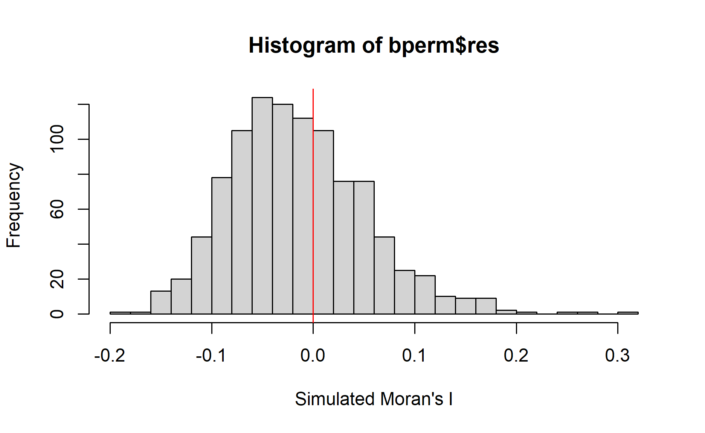
Question: What statistical observation can you draw from the output above?
The distribution is clearly right-skewed.
Challenge: Instead of using Base Graph to plot the values, plot the values by using ggplot2 package.
Challenge accepted!!😄
# need to convert to dataframe first for ggplot
bperm_df <- as.data.frame(bperm$res)
# then we can actually plot!
ggplot(data=bperm_df,
aes(x= as.numeric(`bperm$res`)))+
geom_histogram(bins=20,
color="black",
fill="white") +
geom_vline(aes(xintercept=0),
color="red", linetype="dashed", size=1) +
labs(title = "Distribution of Monte Carlo Moran’s I statistics",
x = "Simulated Moran's I",
y = "Frequency")
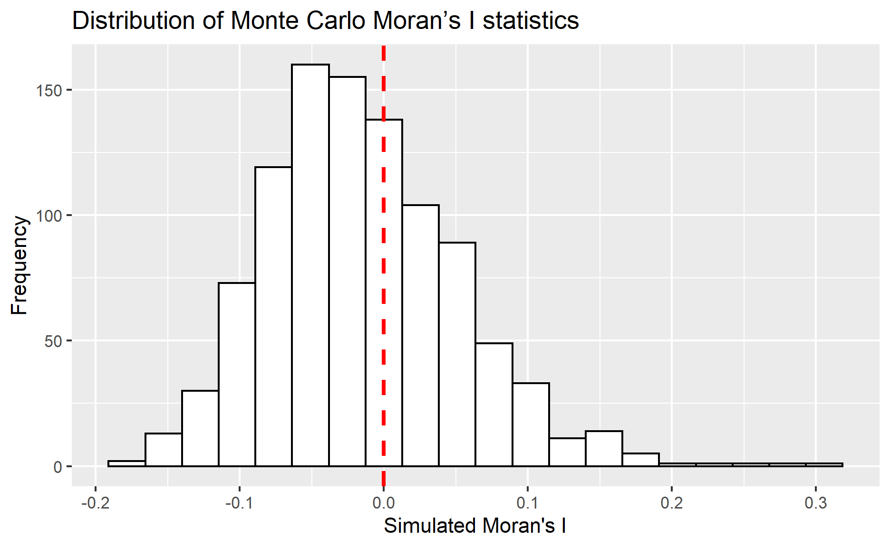
Moving on to Geary C - we’ll perform Geary’s C test for spatial autocorrelation by using geary.test() of our spdep package:
geary.test(hunan$GDPPC, listw=rswm_q)
Geary C test under randomisation
data: hunan$GDPPC
weights: rswm_q
Geary C statistic standard deviate = 3.6108, p-value =
0.0001526
alternative hypothesis: Expectation greater than statistic
sample estimates:
Geary C statistic Expectation Variance
0.6907223 1.0000000 0.0073364 Question: What statistical conclusion can you draw from the output above?
The p-value which is 0.0001526, which is smaller than our alpha 0.001. With this, we will reject the null hypothesis at 99.9% confidence interval. Additionally, since the Geary’s C statistic 0.6907223 is < 1, we can infer that the spatial patterns we observe resemble a cluster.
Now, we’ll perform the permutation test for Geary’s C statistic by using geary.mc() of our spdep package:
set.seed(1234)
bperm=geary.mc(hunan$GDPPC,
listw=rswm_q,
nsim=999)
bperm
Monte-Carlo simulation of Geary C
data: hunan$GDPPC
weights: rswm_q
number of simulations + 1: 1000
statistic = 0.69072, observed rank = 1, p-value = 0.001
alternative hypothesis: greaterQuestion: What statistical conclusion can you draw from the output above?
Our P-value is 0.001 after 1000 simulations, which is equal to our alpha value 0.001. As such, we accept the null hypothesis at confidence interval 99.9%. Additionally, since the Geary’s C statistic 0.69072 is < 1, we can infer that the spatial patterns we observe resemble a cluster.
Like above, let’s plot a histogram to reveal the distribution of the simulated values:
mean(bperm$res[1:999])
[1] 1.004402var(bperm$res[1:999])
[1] 0.007436493summary(bperm$res[1:999])
Min. 1st Qu. Median Mean 3rd Qu. Max.
0.7142 0.9502 1.0052 1.0044 1.0595 1.2722 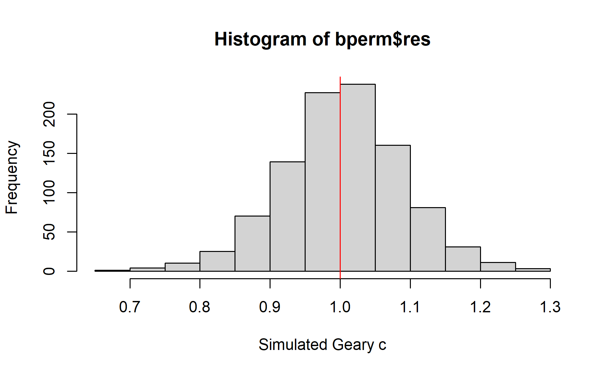
Question: What statistical observation can you draw from the output?
The distribution resembles a normal distribution, with more values in the center.
So, what are spatial correlograms? They’re used to examine patterns of spatial autocorrelation in your data or model residuals. They are plots of some index of autocorrelation (Moran’s I or Geary’s c) against distance, showing how correlated the pairs of spatial observations are when you increase the distance (lag) between them.
Some might compare correlograms with variograms - it’s true that they aren’t as fundamental as the latter, but they still remain extremely useful as an exploratory and descriptive tool, and for these purposes tend to provide richer information than variograms.
We’ll use sp.correlogram() of our spdep package to compute a 6-lag spatial correlogram of GDPPC, and then plot() it out. The global spatial autocorrelation used is Moran’s I.
MI_corr <- sp.correlogram(wm_q,
hunan$GDPPC,
order=6,
method="I",
style="W")
plot(MI_corr)
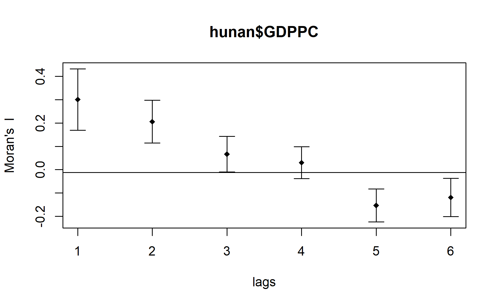
Keep in mind that purely plotting the output might give us the complete interpretation. Why? Because not all autocorrelation values are statistically significant. So let’s examine the full analysis report by printing out the analysis results:
print(MI_corr)
Spatial correlogram for hunan$GDPPC
method: Moran's I
estimate expectation variance standard deviate
1 (88) 0.3007500 -0.0114943 0.0043484 4.7351
2 (88) 0.2060084 -0.0114943 0.0020962 4.7505
3 (88) 0.0668273 -0.0114943 0.0014602 2.0496
4 (88) 0.0299470 -0.0114943 0.0011717 1.2107
5 (88) -0.1530471 -0.0114943 0.0012440 -4.0134
6 (88) -0.1187070 -0.0114943 0.0016791 -2.6164
Pr(I) two sided
1 (88) 2.189e-06 ***
2 (88) 2.029e-06 ***
3 (88) 0.040400 *
4 (88) 0.226015
5 (88) 5.984e-05 ***
6 (88) 0.008886 **
---
Signif. codes: 0 '***' 0.001 '**' 0.01 '*' 0.05 '.' 0.1 ' ' 1Here, we’re doing the same thing as in 4.1 - using use sp.correlogram() of our spdep package to compute a 6-lag spatial correlogram of GDPPC, and then plot() it out. The main difference is that this time, the global spatial autocorrelation used is Moran’s I.
GC_corr <- sp.correlogram(wm_q,
hunan$GDPPC,
order=6,
method="C",
style="W")
plot(GC_corr)
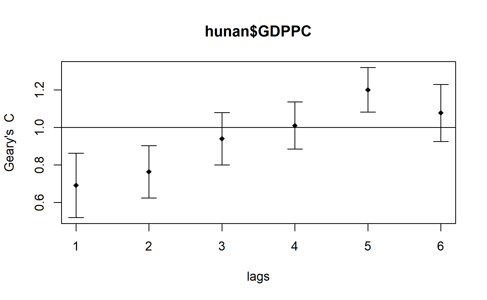
Similar to the previous step, we will print out the analysis report:
print(GC_corr)
Spatial correlogram for hunan$GDPPC
method: Geary's C
estimate expectation variance standard deviate
1 (88) 0.6907223 1.0000000 0.0073364 -3.6108
2 (88) 0.7630197 1.0000000 0.0049126 -3.3811
3 (88) 0.9397299 1.0000000 0.0049005 -0.8610
4 (88) 1.0098462 1.0000000 0.0039631 0.1564
5 (88) 1.2008204 1.0000000 0.0035568 3.3673
6 (88) 1.0773386 1.0000000 0.0058042 1.0151
Pr(I) two sided
1 (88) 0.0003052 ***
2 (88) 0.0007220 ***
3 (88) 0.3892612
4 (88) 0.8757128
5 (88) 0.0007592 ***
6 (88) 0.3100407
---
Signif. codes: 0 '***' 0.001 '**' 0.01 '*' 0.05 '.' 0.1 ' ' 1Introducing LISA! No, not the actress - LISA stands for Local Indicators of Spatial Association. These are statistics that evaluate the existence of clusters in the spatial arrangement of a given variable.
Let’s say that we’re studying cancer rates among census tracts in a given city locale. In this case, clusters in the rates mean that there are areas that have higher/lower rates than is to be expected by chance alone. In other words: the values occurring are above or below those of a random distribution in space.
In this section, we’ll learn how to apply appropriate LISA, especially local Moran’s I to detect clusters and/or outliers from GDP per capita 2012 in the Hunan Province, PRC.
We’ll be using the localmoran() function of our spdep package. It computes Ii values, given a set of zi values and a listw object providing neighbour weighting information for the polygon associated with the zi values.
# computing at county level
fips <- order(hunan$County)
localMI <- localmoran(hunan$GDPPC, rswm_q)
head(localMI)
Ii E.Ii Var.Ii Z.Ii Pr(z != E(Ii))
1 -0.001468468 -2.815006e-05 4.723841e-04 -0.06626904 0.9471636
2 0.025878173 -6.061953e-04 1.016664e-02 0.26266425 0.7928094
3 -0.011987646 -5.366648e-03 1.133362e-01 -0.01966705 0.9843090
4 0.001022468 -2.404783e-07 5.105969e-06 0.45259801 0.6508382
5 0.014814881 -6.829362e-05 1.449949e-03 0.39085814 0.6959021
6 -0.038793829 -3.860263e-04 6.475559e-03 -0.47728835 0.6331568Let’s explain the localmoran() function and its output! It returns a matrix of values whose columns are:
We can list the content of the local Moran matrix derived by using printCoefmat(), like so:
printCoefmat(data.frame(localMI[fips,], row.names=hunan$County[fips]), check.names=FALSE)
Ii E.Ii Var.Ii Z.Ii
Anhua -2.2493e-02 -5.0048e-03 5.8235e-02 -7.2467e-02
Anren -3.9932e-01 -7.0111e-03 7.0348e-02 -1.4791e+00
Anxiang -1.4685e-03 -2.8150e-05 4.7238e-04 -6.6269e-02
Baojing 3.4737e-01 -5.0089e-03 8.3636e-02 1.2185e+00
Chaling 2.0559e-02 -9.6812e-04 2.7711e-02 1.2932e-01
Changning -2.9868e-05 -9.0010e-09 1.5105e-07 -7.6828e-02
Changsha 4.9022e+00 -2.1348e-01 2.3194e+00 3.3590e+00
Chengbu 7.3725e-01 -1.0534e-02 2.2132e-01 1.5895e+00
Chenxi 1.4544e-01 -2.8156e-03 4.7116e-02 6.8299e-01
Cili 7.3176e-02 -1.6747e-03 4.7902e-02 3.4200e-01
Dao 2.1420e-01 -2.0824e-03 4.4123e-02 1.0297e+00
Dongan 1.5210e-01 -6.3485e-04 1.3471e-02 1.3159e+00
Dongkou 5.2918e-01 -6.4461e-03 1.0748e-01 1.6338e+00
Fenghuang 1.8013e-01 -6.2832e-03 1.3257e-01 5.1198e-01
Guidong -5.9160e-01 -1.3086e-02 3.7003e-01 -9.5104e-01
Guiyang 1.8240e-01 -3.6908e-03 3.2610e-02 1.0305e+00
Guzhang 2.8466e-01 -8.5054e-03 1.4152e-01 7.7931e-01
Hanshou 2.5878e-02 -6.0620e-04 1.0167e-02 2.6266e-01
Hengdong 9.9964e-03 -4.9063e-04 6.7742e-03 1.2742e-01
Hengnan 2.8064e-02 -3.2160e-04 3.7597e-03 4.6294e-01
Hengshan -5.8201e-03 -3.0437e-05 5.1076e-04 -2.5618e-01
Hengyang 6.2997e-02 -1.3046e-03 2.1865e-02 4.3486e-01
Hongjiang 1.8790e-01 -2.3019e-03 3.1725e-02 1.0678e+00
Huarong -1.5389e-02 -1.8667e-03 8.1030e-02 -4.7503e-02
Huayuan 8.3772e-02 -8.5569e-04 2.4495e-02 5.4072e-01
Huitong 2.5997e-01 -5.2447e-03 1.1077e-01 7.9685e-01
Jiahe -1.2431e-01 -3.0550e-03 5.1111e-02 -5.3633e-01
Jianghua 2.8651e-01 -3.8280e-03 8.0968e-02 1.0204e+00
Jiangyong 2.4337e-01 -2.7082e-03 1.1746e-01 7.1800e-01
Jingzhou 1.8270e-01 -8.5106e-04 2.4363e-02 1.1759e+00
Jinshi -1.1988e-02 -5.3666e-03 1.1334e-01 -1.9667e-02
Jishou -2.8680e-01 -2.6305e-03 4.4028e-02 -1.3543e+00
Lanshan 6.3334e-02 -9.6365e-04 2.0441e-02 4.4972e-01
Leiyang 1.1581e-02 -1.4948e-04 2.5082e-03 2.3422e-01
Lengshuijiang -1.7903e+00 -8.2129e-02 2.1598e+00 -1.1623e+00
Li 1.0225e-03 -2.4048e-07 5.1060e-06 4.5260e-01
Lianyuan -1.4672e-01 -1.8983e-03 1.9145e-02 -1.0467e+00
Liling 1.3774e+00 -1.5097e-02 4.2601e-01 2.1335e+00
Linli 1.4815e-02 -6.8294e-05 1.4499e-03 3.9086e-01
Linwu -2.4621e-03 -9.0703e-06 1.9258e-04 -1.7676e-01
Linxiang 6.5904e-02 -2.9028e-03 2.5470e-01 1.3634e-01
Liuyang 3.3688e+00 -7.7502e-02 1.5180e+00 2.7972e+00
Longhui 8.0801e-01 -1.1377e-02 1.5538e-01 2.0787e+00
Longshan 7.5663e-01 -1.1100e-02 3.1449e-01 1.3690e+00
Luxi 1.8177e-01 -2.4855e-03 3.4249e-02 9.9561e-01
Mayang 2.1852e-01 -5.8773e-03 9.8049e-02 7.1663e-01
Miluo 1.8704e+00 -1.6927e-02 2.7925e-01 3.5715e+00
Nan -9.5789e-03 -4.9497e-04 6.8341e-03 -1.0988e-01
Ningxiang 1.5607e+00 -7.3878e-02 8.0012e-01 1.8274e+00
Ningyuan 2.0910e-01 -7.0884e-03 8.2306e-02 7.5356e-01
Pingjiang -9.8964e-01 -2.6457e-03 5.6027e-02 -4.1698e+00
Qidong 1.1806e-01 -2.1207e-03 2.4747e-02 7.6396e-01
Qiyang 6.1966e-02 -7.3374e-04 8.5743e-03 6.7712e-01
Rucheng -3.6992e-01 -8.8999e-03 2.5272e-01 -7.1814e-01
Sangzhi 2.5053e-01 -4.9470e-03 6.8000e-02 9.7972e-01
Shaodong -3.2659e-02 -3.6592e-05 5.0546e-04 -1.4510e+00
Shaoshan 2.1223e+00 -5.0227e-02 1.3668e+00 1.8583e+00
Shaoyang 5.9499e-01 -1.1253e-02 1.3012e-01 1.6807e+00
Shimen -3.8794e-02 -3.8603e-04 6.4756e-03 -4.7729e-01
Shuangfeng 9.2835e-03 -2.2867e-03 3.1516e-02 6.5174e-02
Shuangpai 8.0591e-02 -3.1366e-04 8.9838e-03 8.5358e-01
Suining 3.7585e-01 -3.5933e-03 4.1870e-02 1.8544e+00
Taojiang -2.5394e-01 -1.2395e-03 1.4477e-02 -2.1002e+00
Taoyuan 1.4729e-02 -1.2039e-04 8.5103e-04 5.0903e-01
Tongdao 4.6482e-01 -6.9870e-03 1.9879e-01 1.0582e+00
Wangcheng 4.4220e+00 -1.1067e-01 1.3596e+00 3.8873e+00
Wugang 7.1003e-01 -7.8144e-03 1.0710e-01 2.1935e+00
Xiangtan 2.4530e-01 -3.6457e-04 3.2319e-03 4.3213e+00
Xiangxiang 2.6271e-01 -1.2703e-03 2.1290e-02 1.8092e+00
Xiangyin 5.4525e-01 -4.7442e-03 7.9236e-02 1.9539e+00
Xinhua 1.1810e-01 -6.2649e-03 8.6001e-02 4.2409e-01
Xinhuang 1.5725e-01 -4.1820e-03 3.6648e-01 2.6667e-01
Xinning 6.8928e-01 -9.6674e-03 2.0328e-01 1.5502e+00
Xinshao 5.7578e-02 -8.5932e-03 1.1769e-01 1.9289e-01
Xintian -7.4050e-03 -5.1493e-03 1.0877e-01 -6.8395e-03
Xupu 3.2406e-01 -5.7468e-03 5.7735e-02 1.3726e+00
Yanling -6.9021e-02 -5.9211e-04 9.9306e-03 -6.8667e-01
Yizhang -2.6844e-01 -2.2463e-03 4.7588e-02 -1.2202e+00
Yongshun 6.3064e-01 -1.1350e-02 1.8830e-01 1.4795e+00
Yongxing 4.3411e-01 -9.0735e-03 1.5088e-01 1.1409e+00
You 7.8750e-02 -7.2728e-03 1.2116e-01 2.4714e-01
Yuanjiang 2.0004e-04 -1.7760e-04 2.9798e-03 6.9181e-03
Yuanling 8.7298e-03 -2.2981e-06 2.3221e-05 1.8121e+00
Yueyang 4.1189e-02 -1.9768e-04 2.3113e-03 8.6085e-01
Zhijiang 1.0476e-01 -7.8123e-04 1.3100e-02 9.2214e-01
Zhongfang -2.2685e-01 -2.1455e-03 3.5927e-02 -1.1855e+00
Zhuzhou 3.2864e-01 -5.2432e-04 7.2391e-03 3.8688e+00
Zixing -7.6849e-01 -8.8210e-02 9.4057e-01 -7.0144e-01
Pr.z....E.Ii..
Anhua 0.9422
Anren 0.1391
Anxiang 0.9472
Baojing 0.2230
Chaling 0.8971
Changning 0.9388
Changsha 0.0008
Chengbu 0.1119
Chenxi 0.4946
Cili 0.7324
Dao 0.3032
Dongan 0.1882
Dongkou 0.1023
Fenghuang 0.6087
Guidong 0.3416
Guiyang 0.3028
Guzhang 0.4358
Hanshou 0.7928
Hengdong 0.8986
Hengnan 0.6434
Hengshan 0.7978
Hengyang 0.6637
Hongjiang 0.2856
Huarong 0.9621
Huayuan 0.5887
Huitong 0.4255
Jiahe 0.5917
Jianghua 0.3076
Jiangyong 0.4728
Jingzhou 0.2396
Jinshi 0.9843
Jishou 0.1756
Lanshan 0.6529
Leiyang 0.8148
Lengshuijiang 0.2451
Li 0.6508
Lianyuan 0.2952
Liling 0.0329
Linli 0.6959
Linwu 0.8597
Linxiang 0.8916
Liuyang 0.0052
Longhui 0.0376
Longshan 0.1710
Luxi 0.3194
Mayang 0.4736
Miluo 0.0004
Nan 0.9125
Ningxiang 0.0676
Ningyuan 0.4511
Pingjiang 0.0000
Qidong 0.4449
Qiyang 0.4983
Rucheng 0.4727
Sangzhi 0.3272
Shaodong 0.1468
Shaoshan 0.0631
Shaoyang 0.0928
Shimen 0.6332
Shuangfeng 0.9480
Shuangpai 0.3933
Suining 0.0637
Taojiang 0.0357
Taoyuan 0.6107
Tongdao 0.2900
Wangcheng 0.0001
Wugang 0.0283
Xiangtan 0.0000
Xiangxiang 0.0704
Xiangyin 0.0507
Xinhua 0.6715
Xinhuang 0.7897
Xinning 0.1211
Xinshao 0.8470
Xintian 0.9945
Xupu 0.1699
Yanling 0.4923
Yizhang 0.2224
Yongshun 0.1390
Yongxing 0.2539
You 0.8048
Yuanjiang 0.9945
Yuanling 0.0700
Yueyang 0.3893
Zhijiang 0.3565
Zhongfang 0.2358
Zhuzhou 0.0001
Zixing 0.4830Before mapping the local Moran’s I map, we should append the local Moran’s I dataframe (i.e. localMI) onto our hunan SpatialPolygonDataFrame:
hunan.localMI <- cbind(hunan,localMI) %>%
rename(Pr.Ii = Pr.z....E.Ii..)
Now, let’s plot the local Moran’s I values:
tm_shape(hunan.localMI) +
tm_fill(col = "Ii",
style = "pretty",
palette = "RdBu",
title = "local moran statistics") +
tm_borders(alpha = 0.5)
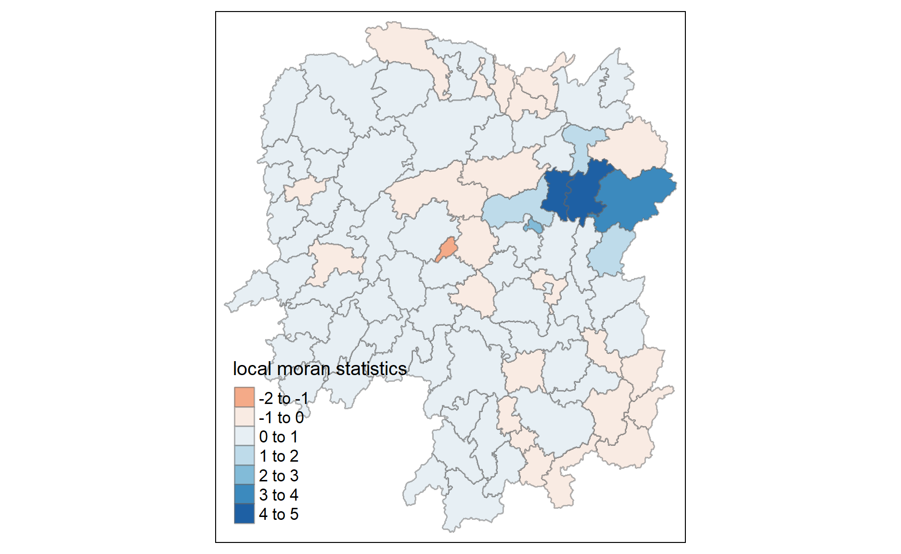
Hmm… there are both positive and negative Ii values. We should also consider the p-values for each of these values, so let’s go ahead and plot the local Moran’s I p-values:
tm_shape(hunan.localMI) +
tm_fill(col = "Pr.Ii",
breaks=c(-Inf, 0.001, 0.01, 0.05, 0.1, Inf),
palette="-Blues",
title = "local Moran's I p-values") +
tm_borders(alpha = 0.5)
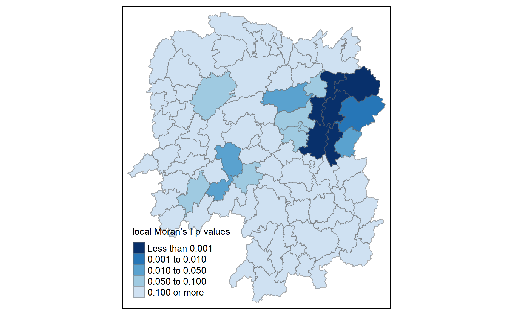
Let’s combine both plots into one for a more effective interpretation of the results!
localMI.map <- tm_shape(hunan.localMI) +
tm_fill(col = "Ii",
style = "pretty",
title = "local moran statistics") +
tm_borders(alpha = 0.5)
pvalue.map <- tm_shape(hunan.localMI) +
tm_fill(col = "Pr.Ii",
breaks=c(-Inf, 0.001, 0.01, 0.05, 0.1, Inf),
palette="-Blues",
title = "local Moran's I p-values") +
tm_borders(alpha = 0.5)
tmap_arrange(localMI.map, pvalue.map, asp=1, ncol=2)
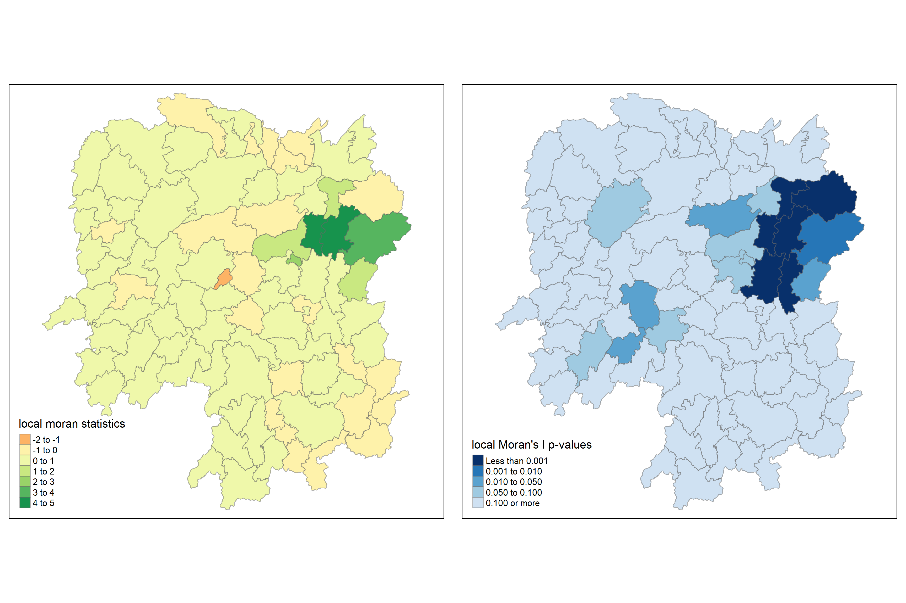
With a LISA Cluster Map, we can colour code any significant locations color by the type of spatial autocorrelation.
“Wait, I thought we were going to plot a LISA Cluster Map! Why are we plotting a Moran scatterplot as the first step?”
You might be wondering that - and I’m here to answer! The Moran scatterplot serves to illustrate the relationship between the values of the chosen attribute at each location as well as the average value of the same attribute at neighboring locations. As such, it’s a significant contributor to our eventual cluster map.
Let’s go ahead and use moran.plot():
nci <- moran.plot(hunan$GDPPC, rswm_q,
labels=as.character(hunan$County),
xlab="GDPPC 2012",
ylab="Spatially Lag GDPPC 2012")
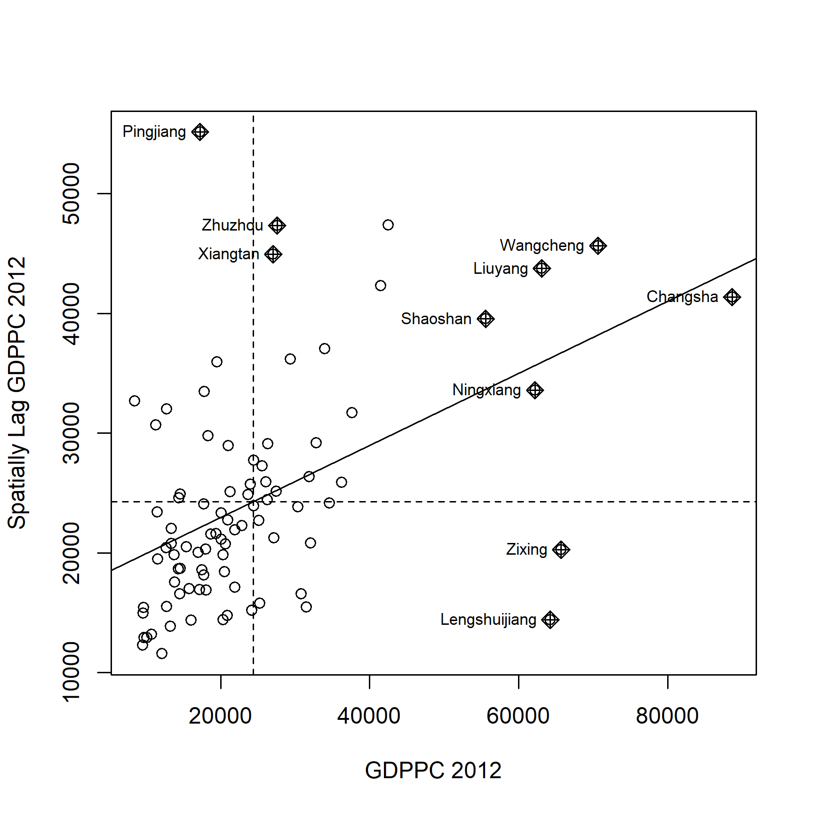
You might notice that the plot is split in 4 quadrants. The top right corner belongs to areas that have high GDPPC and are surrounded by other areas that have the average level of GDPPC.
We’ll use scale() to center and scale our variable, which in this case is done by:
# we use as.vector to ensure our output is a vector
# Reference: https://www.rdocumentation.org/packages/pbdDMAT/versions/0.5-1/topics/as.vecto
hunan$Z.GDPPC <- scale(hunan$GDPPC) %>% as.vector
Now, we are ready to plot:
nci2 <- moran.plot(hunan$Z.GDPPC, rswm_q,
labels=as.character(hunan$County),
xlab="z-GDPPC 2012",
ylab="Spatially Lag z-GDPPC 2012")
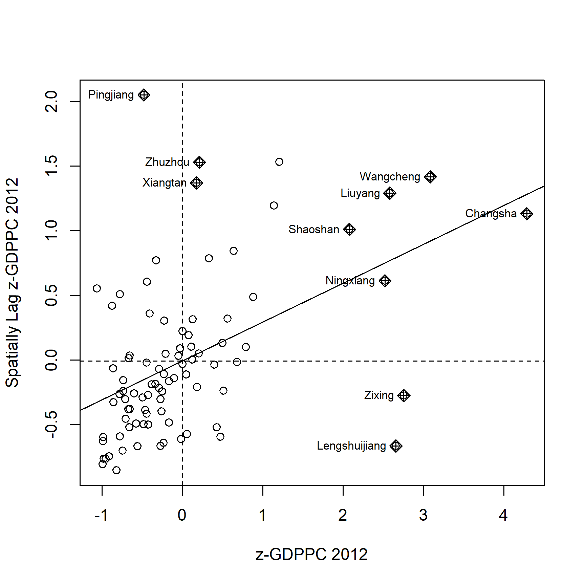
quadrant <- vector(mode="numeric",length=nrow(localMI))
# center the variable of interest around its mean
DV <- hunan$GDPPC - mean(hunan$GDPPC)
# center the local Moran's around the mean
C_mI <- localMI[,1] - mean(localMI[,1])
# set a statistical significance level for the local Moran
signif <- 0.05
# define the high-high, low-low, low-high and high-low categories
quadrant[DV >0 & C_mI>0] <- 4
quadrant[DV <0 & C_mI<0] <- 1
quadrant[DV <0 & C_mI>0] <- 2
quadrant[DV >0 & C_mI<0] <- 3
# places non-significant Moran in the category 0
quadrant[localMI[,5]>signif] <- 0
Now, we can finally build our LISA map!
hunan.localMI$quadrant <- quadrant
colors <- c("#ffffff", "#2c7bb6", "#abd9e9", "#fdae61", "#d7191c")
clusters <- c("insignificant", "low-low", "low-high", "high-low", "high-high")
tm_shape(hunan.localMI) +
tm_fill(col = "quadrant",
style = "cat",
palette = colors[c(sort(unique(quadrant)))+1],
labels = clusters[c(sort(unique(quadrant)))+1],
popup.vars = c("")) +
tm_view(set.zoom.limits = c(11,17)) +
tm_borders(alpha=0.5)
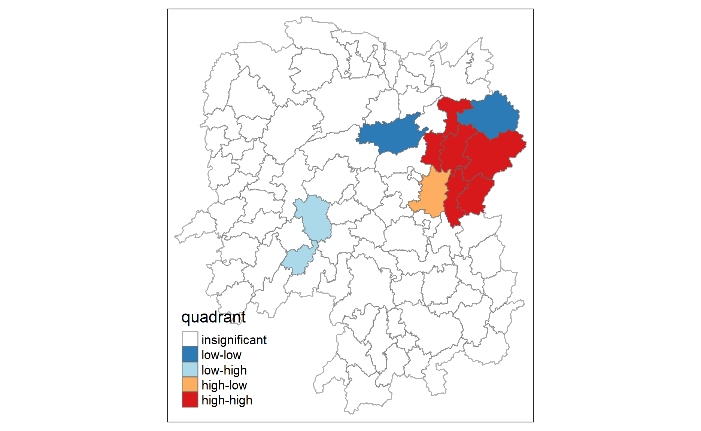
Like before, we should plot both the local Moran’s I values map and its corresponding p-values map next to each other:
gdppc <- qtm(hunan, "GDPPC")
hunan.localMI$quadrant <- quadrant
colors <- c("#ffffff", "#2c7bb6", "#abd9e9", "#fdae61", "#d7191c")
clusters <- c("insignificant", "low-low", "low-high", "high-low", "high-high")
LISAmap <- tm_shape(hunan.localMI) +
tm_fill(col = "quadrant",
style = "cat",
palette = colors[c(sort(unique(quadrant)))+1],
labels = clusters[c(sort(unique(quadrant)))+1],
popup.vars = c("")) +
tm_view(set.zoom.limits = c(11,17)) +
tm_borders(alpha=0.5)
tmap_arrange(gdppc, LISAmap, asp=1, ncol=2)
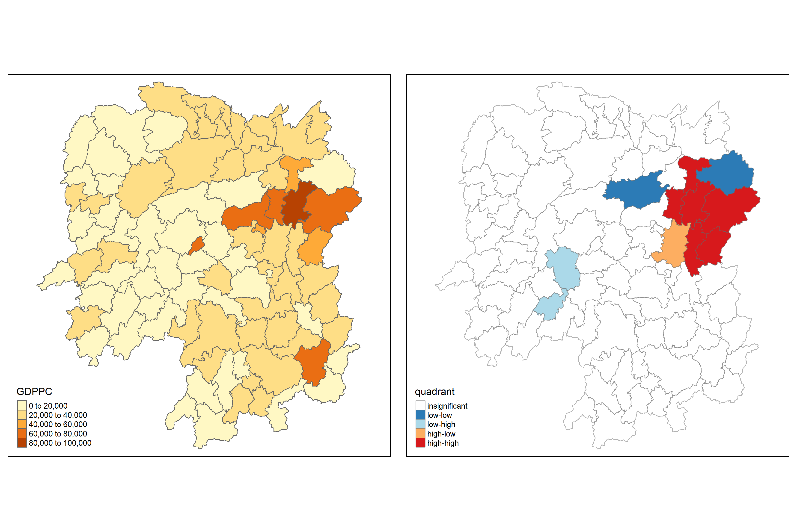
Thinking point 💡 : what statistical observations can we draw from the LISA map above?
Beside detecting cluster and outliers, localised spatial statistics can be also used to detect hot spot and/or cold spot areas - regions/values that are higher or lower (respectively) relative to its surroundings.
An alternative spatial statistics to detect spatial anomalies is the Getis and Ord’s G-statistics, which looks at neighbours within a defined proximity to identify where either high/low values cluster spatially. Here, statistically significant hot-spots are recognised as areas of high values where other areas within a neighbourhood range likewise share high values too.
The analysis consists of three steps:
First, let’s start by defining a new set of neighbours. Whilst spatial autocorrelation considers units which share borders, for Getis-Ord we are defining neighbours based on distance.
There are two type of distance-based proximity matrix:
Like always, before we can make our connectivity graph, we’ll need points to associate with each polygon - aka our centroids.
In the context of this dataset, we’ll need to set our coordinates into a separate data frame with a mapping function, which will apply a given function to each element of a vector and returns a vector of the same length.
Our function is st_centroid(), with our input vector is the geometry column of us.bound - which has both longitude and latitude values that we’ll save as separate variables (and combine to get our centroid). To help us execute the mapping, we’ll be using map_dbl() from the purrr package!
Let’s get our longitude first:
# [[1]] is the first value of the centroid, which is longitude
longitude <- map_dbl(hunan$geometry, ~st_centroid(.x)[[1]])
The latitude is the same, except that we’re accessing the 2nd value to get latitude:
latitude <- map_dbl(hunan$geometry, ~st_centroid(.x)[[2]])
Now that we have latitude and longitude, we’ll use cbind to put longitude and latitude into the same object:
coords <- cbind(longitude, latitude)
Let’s check to see if things are formatted correctly!
head(coords)
longitude latitude
[1,] 112.1531 29.44362
[2,] 112.0372 28.86489
[3,] 111.8917 29.47107
[4,] 111.7031 29.74499
[5,] 111.6138 29.49258
[6,] 111.0341 29.79863We’ll need to determine the upper limit for distance band by using the steps below:
#coords <- coordinates(hunan)
k1 <- knn2nb(knearneigh(coords))
k1dists <- unlist(nbdists(k1, coords, longlat = TRUE))
summary(k1dists)
Min. 1st Qu. Median Mean 3rd Qu. Max.
24.79 32.57 38.01 39.07 44.52 61.79 The summary report shows that the largest first nearest neighbour distance is 61.79 km, so using this as the upper threshold gives certainty that all units will have at least one neighbour.
Now, we will compute the distance weight matrix by using dnearneigh():
wm_d62 <- dnearneigh(coords, 0, 62, longlat = TRUE)
wm_d62
Neighbour list object:
Number of regions: 88
Number of nonzero links: 324
Percentage nonzero weights: 4.183884
Average number of links: 3.681818 Next, to convert the nb object into spatial weights object, we’ll rely on nb2listw():
wm62_lw <- nb2listw(wm_d62, style = 'B')
summary(wm62_lw)
Characteristics of weights list object:
Neighbour list object:
Number of regions: 88
Number of nonzero links: 324
Percentage nonzero weights: 4.183884
Average number of links: 3.681818
Link number distribution:
1 2 3 4 5 6
6 15 14 26 20 7
6 least connected regions:
6 15 30 32 56 65 with 1 link
7 most connected regions:
21 28 35 45 50 52 82 with 6 links
Weights style: B
Weights constants summary:
n nn S0 S1 S2
B 88 7744 324 648 5440Having a fixed distance weight matrix means that more densely settled areas (e.g. urban areas) tend to have more neighbours while the less densely settled areas (e.g. rural areas) tend to have lesser neighbours.
However, we can control the number of neighbours directly using k-nearest neighbours, either by accepting asymmetric neighbours or imposing symmetry:
knn <- knn2nb(knearneigh(coords, k=8))
knn
Neighbour list object:
Number of regions: 88
Number of nonzero links: 704
Percentage nonzero weights: 9.090909
Average number of links: 8
Non-symmetric neighbours listOnce again, we use nb2listw() to convert the nb object into spatial weights object:
knn_lw <- nb2listw(knn, style = 'B')
summary(knn_lw)
Characteristics of weights list object:
Neighbour list object:
Number of regions: 88
Number of nonzero links: 704
Percentage nonzero weights: 9.090909
Average number of links: 8
Non-symmetric neighbours list
Link number distribution:
8
88
88 least connected regions:
1 2 3 4 5 6 7 8 9 10 11 12 13 14 15 16 17 18 19 20 21 22 23 24 25 26 27 28 29 30 31 32 33 34 35 36 37 38 39 40 41 42 43 44 45 46 47 48 49 50 51 52 53 54 55 56 57 58 59 60 61 62 63 64 65 66 67 68 69 70 71 72 73 74 75 76 77 78 79 80 81 82 83 84 85 86 87 88 with 8 links
88 most connected regions:
1 2 3 4 5 6 7 8 9 10 11 12 13 14 15 16 17 18 19 20 21 22 23 24 25 26 27 28 29 30 31 32 33 34 35 36 37 38 39 40 41 42 43 44 45 46 47 48 49 50 51 52 53 54 55 56 57 58 59 60 61 62 63 64 65 66 67 68 69 70 71 72 73 74 75 76 77 78 79 80 81 82 83 84 85 86 87 88 with 8 links
Weights style: B
Weights constants summary:
n nn S0 S1 S2
B 88 7744 704 1300 23014fips <- order(hunan$County)
gi.fixed <- localG(hunan$GDPPC, wm62_lw)
gi.fixed
[1] 0.436075843 -0.265505650 -0.073033665 0.413017033 0.273070579
[6] -0.377510776 2.863898821 2.794350420 5.216125401 0.228236603
[11] 0.951035346 -0.536334231 0.176761556 1.195564020 -0.033020610
[16] 1.378081093 -0.585756761 -0.419680565 0.258805141 0.012056111
[21] -0.145716531 -0.027158687 -0.318615290 -0.748946051 -0.961700582
[26] -0.796851342 -1.033949773 -0.460979158 -0.885240161 -0.266671512
[31] -0.886168613 -0.855476971 -0.922143185 -1.162328599 0.735582222
[36] -0.003358489 -0.967459309 -1.259299080 -1.452256513 -1.540671121
[41] -1.395011407 -1.681505286 -1.314110709 -0.767944457 -0.192889342
[46] 2.720804542 1.809191360 -1.218469473 -0.511984469 -0.834546363
[51] -0.908179070 -1.541081516 -1.192199867 -1.075080164 -1.631075961
[56] -0.743472246 0.418842387 0.832943753 -0.710289083 -0.449718820
[61] -0.493238743 -1.083386776 0.042979051 0.008596093 0.136337469
[66] 2.203411744 2.690329952 4.453703219 -0.340842743 -0.129318589
[71] 0.737806634 -1.246912658 0.666667559 1.088613505 -0.985792573
[76] 1.233609606 -0.487196415 1.626174042 -1.060416797 0.425361422
[81] -0.837897118 -0.314565243 0.371456331 4.424392623 -0.109566928
[86] 1.364597995 -1.029658605 -0.718000620
attr(,"gstari")
[1] FALSE
attr(,"call")
localG(x = hunan$GDPPC, listw = wm62_lw)
attr(,"class")
[1] "localG"The output of localG() is a vector of G or Gstar values, with attributes “gstari” set to TRUE or FALSE, “call” set to the function call, and class “localG”. The Gi statistics are represented as a Z-score. The greater the values, the greater the intensity of clustering. Meanwhile, the direction (positive or negative) indicates high or low clusters.
Now, let’s join the Gi values to their corresponding hunan sf data frame:
Now, we’ll map the Gi values derived using fixed distance weight matrix:
gdppc <- qtm(hunan, "GDPPC")
Gimap <-tm_shape(hunan.gi) +
tm_fill(col = "gstat_fixed",
style = "pretty",
palette="-RdBu",
title = "local Gi") +
tm_borders(alpha = 0.5)
tmap_arrange(gdppc, Gimap, asp=1, ncol=2)
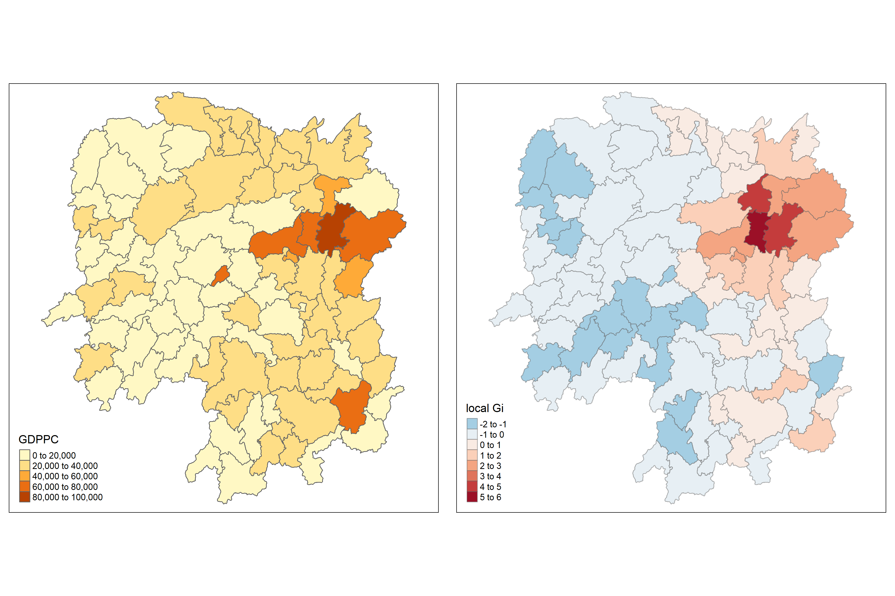
Let’s also compute the Gi values for GDPPC2012 by using an adaptive distance weight matrix (i.e knb_lw):
It is time… time for us to visualise the locations of hot spot and cold spot areas!
gdppc <- qtm(hunan, "GDPPC")
Gimap <- tm_shape(hunan.gi) +
tm_fill(col = "gstat_adaptive",
style = "pretty",
palette="-RdBu",
title = "local Gi") +
tm_borders(alpha = 0.5)
tmap_arrange(gdppc, Gimap, asp=1, ncol=2)
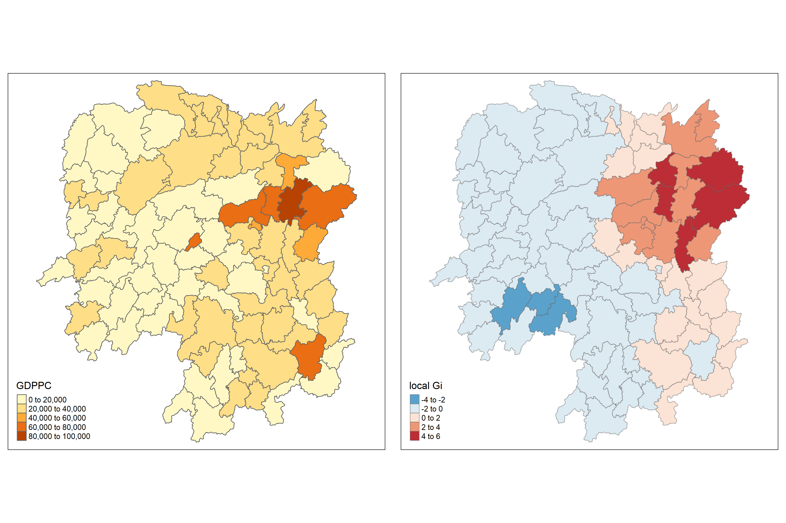
With that, we’ve learned how about autocorrelation, and to computed GSA and LISA. While discovering clusters and outliers, we’ve also discovered how to find hot/cold areas - which will surely come in handy the next time we’re trying to find the distribution of our geospatial data! Tune in next week for more geospatial analysis methods! 😄